Fabricação própria
Produzimos nossas linhas com controle de material, acabamento e qualidade.
Uma linha ampla de acessórios para ferragista — com fabricação própria e a opção de usinagem de peças sob medida.
Muito além de vender peças: fabricamos, usinamos sob medida e mantemos estoque para abastecer o seu negócio.
Produzimos nossas linhas com controle de material, acabamento e qualidade.
Peças torneadas e fresadas conforme o desenho e a aplicação do cliente.
Estoque das principais linhas para fornecimento ágil e regular.
Apoio para identificar a peça certa para cada portão ou equipamento.
Conheça as linhas que cobrem roldanas, gonzos, rolamentos, acabamentos, cadeados e usinagem sob demanda.
Roldanas com canaleta, cubo de aço, nylon e zincadas, com e sem rolamento, para portões de correr.
Gonzos com chumbador, para parafusar, simples e com aba solta, além de articuladores.
Olhos para basculante em nylon e aço, kits de núcleo, kits de rolamento e batentes.
Rolamentos para trilho em aço e nylon e suportes para trilho.
Roletes de nylon, labirintos ICE e guias laterais em PTFE.
Suportes Stanley duplos e quádruplos para portões de correr.
Cotovelos, curvas 45°, 90° e 180°, canoplas, pontas de lança e coroações.
Cadeados King e Mini King e travas laterais.
Tabela de conversão polegadas/milímetros e barras redondas de aço.
Peças torneadas e fresadas fabricadas sob medida, conforme desenho e aplicação.
Nenhuma linha encontrada. Tente outro termo.
Navegue pelas páginas como em um livro: use as setas, arraste as páginas ou clique nas bordas.
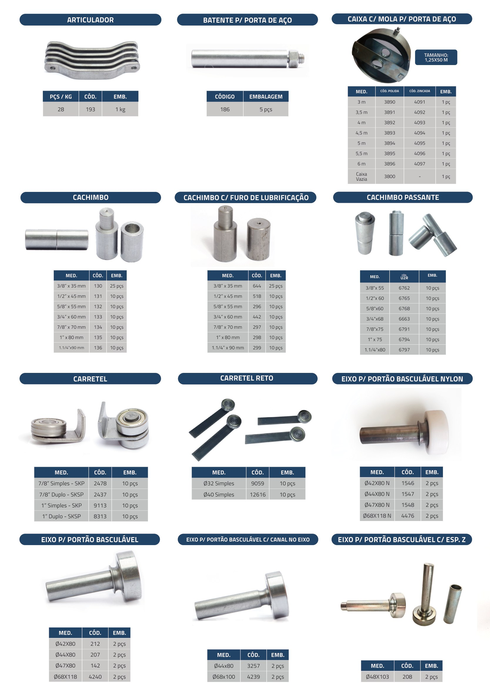
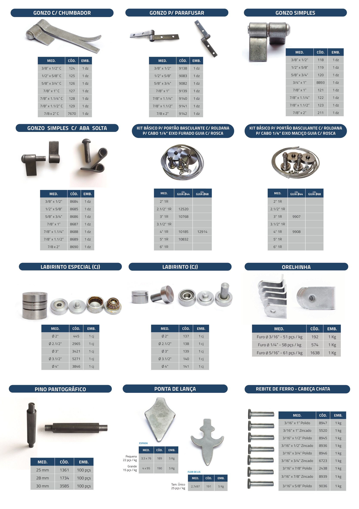
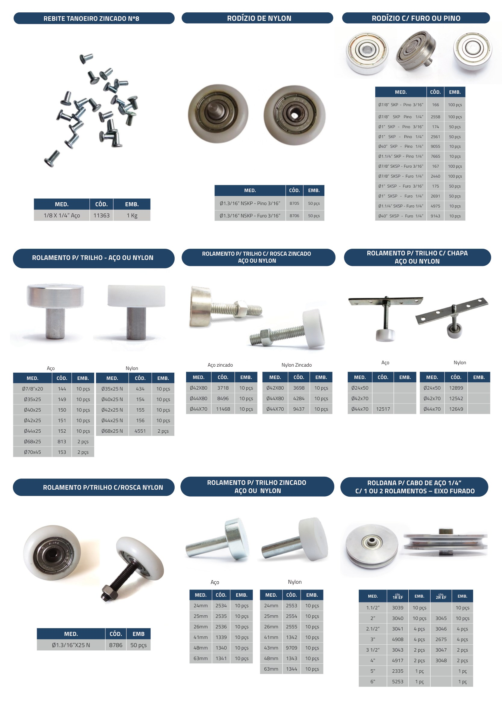
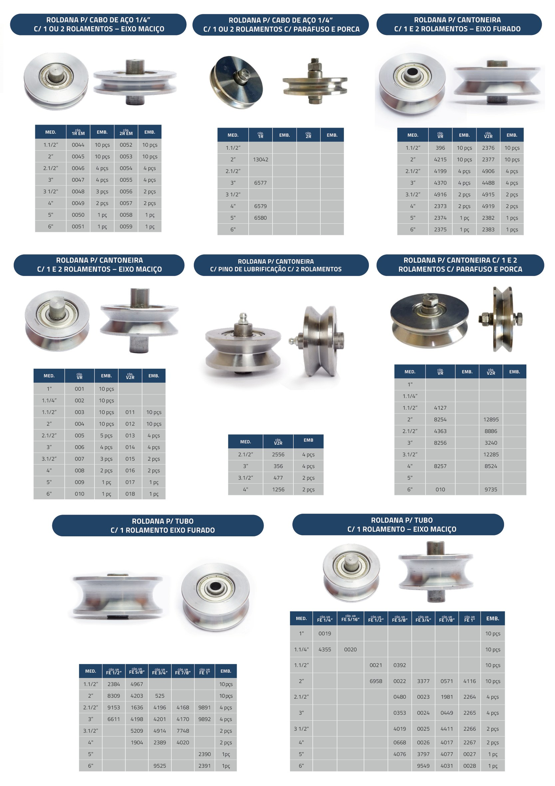
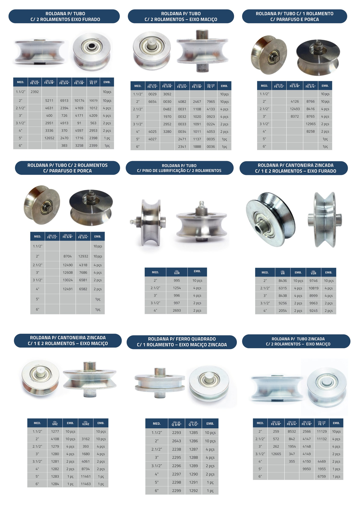
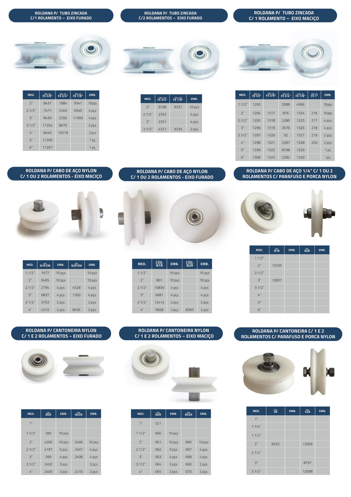
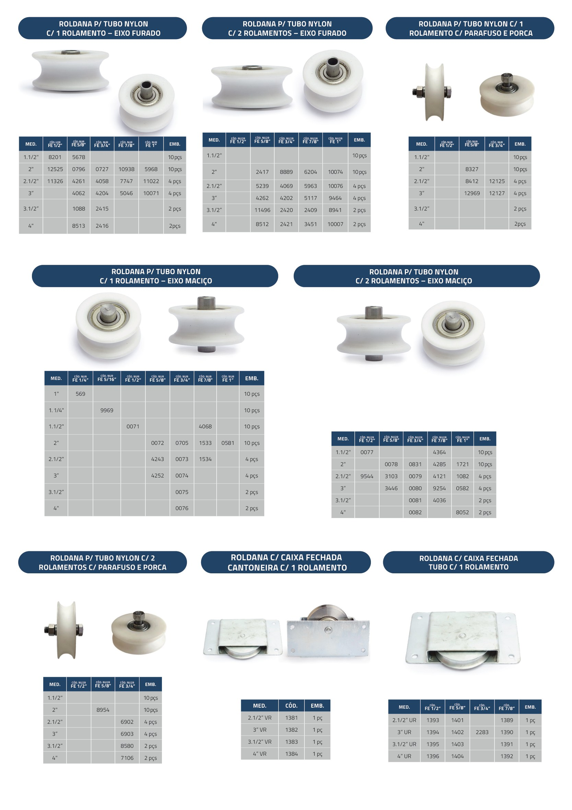
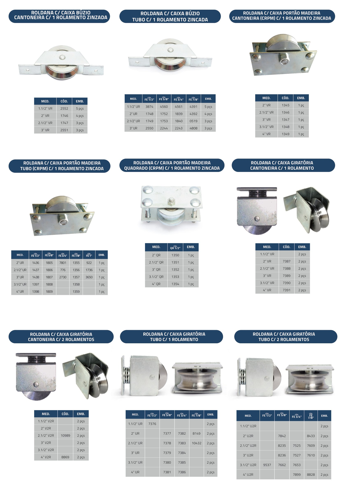
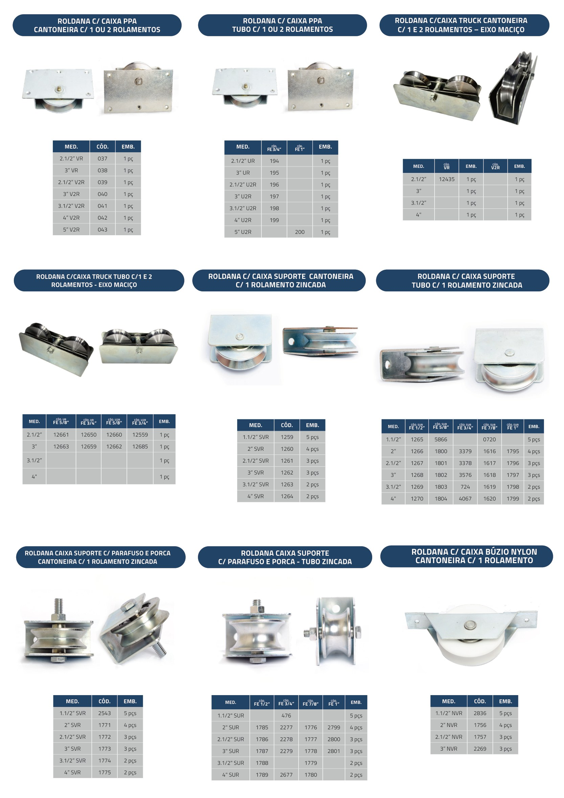
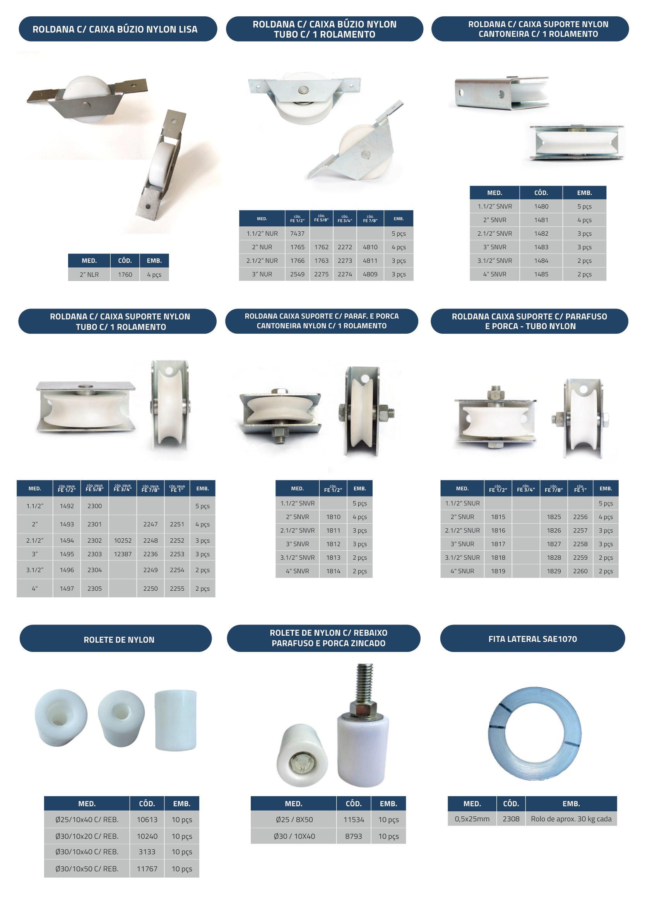
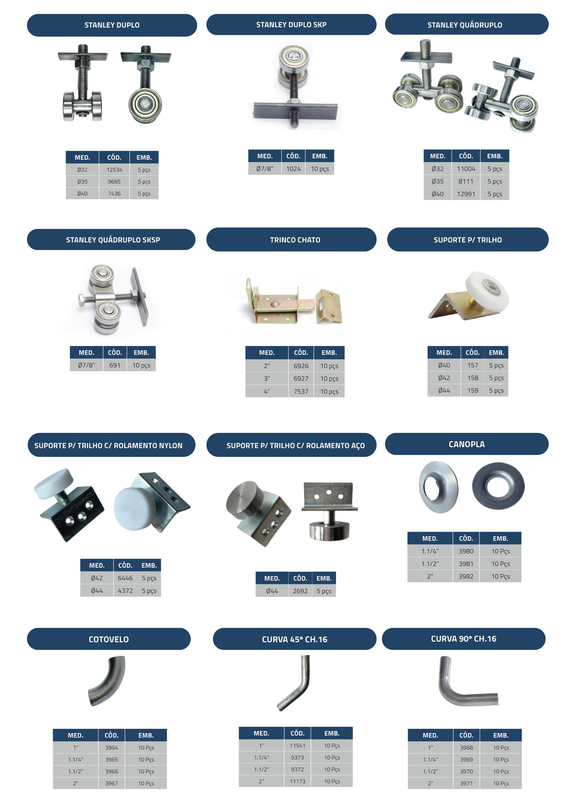
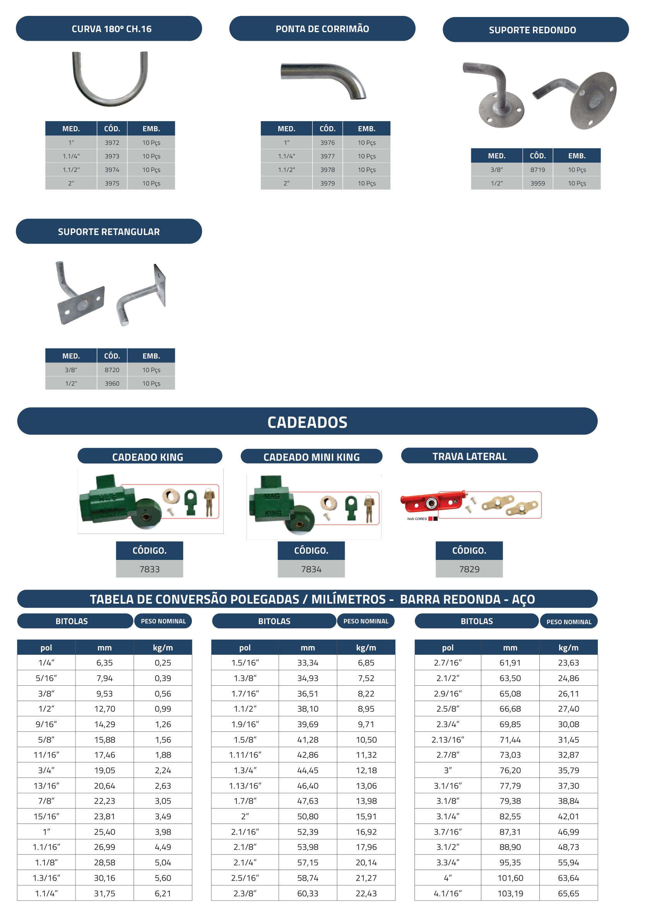
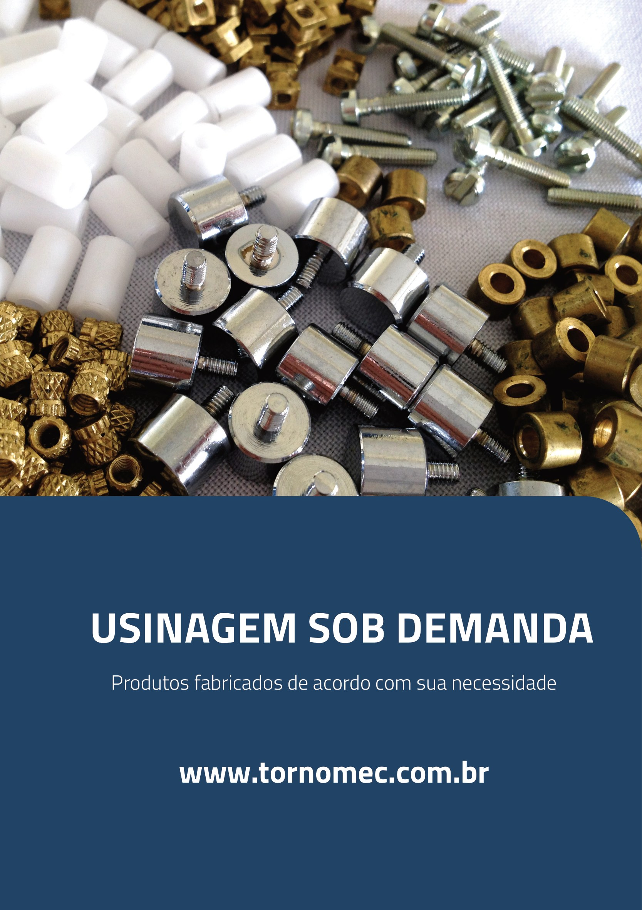
Tenha em mãos todas as linhas da Tornomec, com medidas, códigos e referências para facilitar o seu pedido.